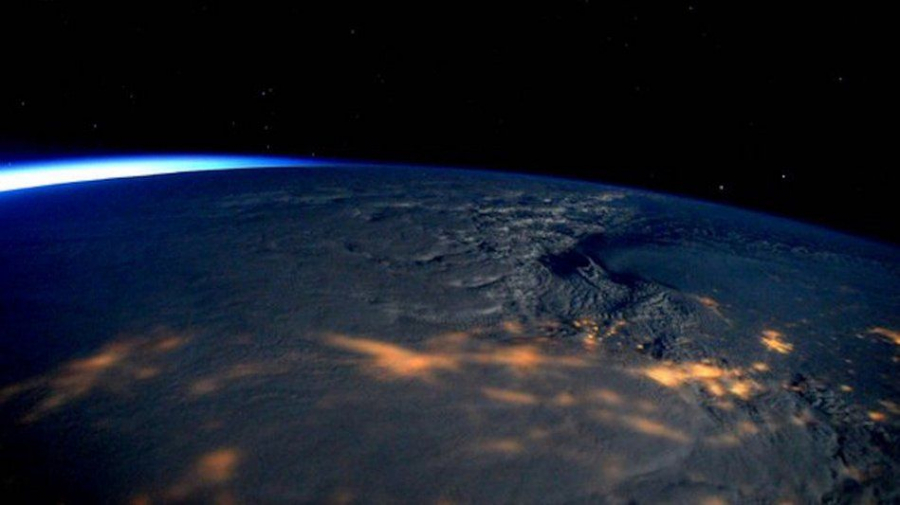

Astronomii au receptionat un semnal radio misterios, de la 500 de milioane de ani lumina. Oamenii de stiinta au aflat ca acesta se repeta la fiecare 16 zile

Un semnal radio misterios care vine de la 500 de milioane de ani lumina da mari batai de cap oamenilor de stiinta! Mai ales ca, de curand, au aflat ca semnalul se repeta o data la 16 zile.
Descoperirea a fost facuta de cercetatorii din Canada cu ajutorul unui telescop ultra-performant.
Masuratorile au fost facute in perioada septembrie 2018 - octombrie 2019, insa datele au fost publicate abia acum.
Oamenii e stiinta incearca sa afle de unde vine semnalul. Iau acum in calcul miscarea orbitala a unei stele sau a unui satelit natural aflat la marginea galaxiei.